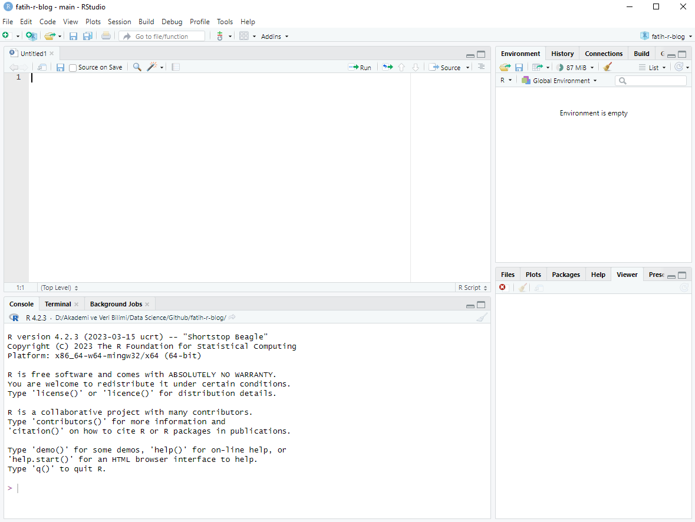

2 + 2[1] 4Bir programlama dilini öğrenmeye başlarken çoğu zaman ilk odak noktası fonksiyonlar, paketler veya veri analizi teknikleri olur. Ancak güçlü bir temel oluşturabilmek için önce programlama ortamının nasıl çalıştığını anlamak gerekir. R ile çalışırken kodların nerede yazıldığı, nasıl çalıştırıldığı, neden script dosyalarının kullanıldığı ve çalışma sürecinin nasıl organize edildiği oldukça önemlidir.
Bu bölümün amacı, R ile ilk çalışma deneyimini oluşturmaktır. Burada yalnızca bazı düğmelere basmayı öğrenmek değil; R ile nasıl düşünülmesi gerektiğini anlamak hedeflenmektedir. Çünkü veri analizi sürecinde yalnızca sonuç üretmek yeterli değildir. Analizlerin düzenli, tekrar üretilebilir ve sürdürülebilir olması da gerekir.
Bu bölümde özellikle şu konular ele alınacaktır:
RStudio ilk açıldığında birden fazla panelden oluşan bir çalışma ortamı görülür. Bu görünüm başlangıçta karmaşık gelebilir; ancak her panelin belirli bir görevi vardır.
Genellikle RStudio arayüzünde şu bölümler yer alır:

İlk aşamada bu panellerin tamamını ayrıntılı şekilde bilmek gerekmez. Önemli olan temel çalışma mantığını kavramaktır:
Kodlar genellikle script dosyasında yazılır,
Console üzerinde çalıştırılır,
oluşan nesneler Environment panelinde görüntülenir.Bu yapı zamanla doğal hale gelecektir.
Console, R komutlarının doğrudan çalıştırıldığı alandır. Yazılan kod çalıştırıldığında sonuç hemen görüntülenir.
Örneğin Console alanına aşağıdaki ifadeyi yazalım:
2 + 2[1] 4R sonucu doğrudan hesaplayacaktır.
Benzer şekilde:
sqrt(25)[1] 5veya:
x <- 10
x * 2[1] 20ifadeleri de Console üzerinde çalıştırılabilir.
Console hızlı denemeler yapmak için oldukça kullanışlıdır. Küçük hesaplamalar, fonksiyon denemeleri veya kısa kontroller için pratik bir çalışma alanı sağlar.
Ancak yalnızca Console kullanarak çalışmanın önemli bir sorunu vardır:
Console geçicidir.
R oturumu kapandığında Console geçmişi kaybolabilir veya düzensiz hale gelebilir. Özellikle uzun analizlerde yalnızca Console üzerinde çalışmak ciddi karmaşaya neden olur.
Sadece Console üzerinde çalışmak, analiz sürecinin tekrar üretilebilirliğini zorlaştırır. Kodların script dosyalarında saklanması daha sağlıklı bir yaklaşımdır.
Script dosyası, R kodlarının düzenli biçimde saklandığı metin dosyasıdır. Genellikle .R uzantısına sahiptir.
Script kullanmanın temel amacı şudur:
Bir veri analizinin günler veya haftalar sürdüğü düşünüldüğünde, tüm kodların düzenli biçimde saklanması kritik hale gelir.
Script dosyası oluşturmak için RStudio’da genellikle şu yol izlenir:
File > New File > R ScriptAçılan bölüm Script Editor alanıdır. Script dosyasına aşağıdaki kodları yazalım:
# İlk değişkenimizi oluşturalım.
x <- 10
# İkinci değişken
y <- 5
# Toplama işlemi
x + y[1] 15Bu kodlar henüz çalıştırılmış değildir. Script dosyası, kodların saklandığı çalışma alanıdır.
Script dosyasındaki kodları çalıştırmanın farklı yolları vardır.
En yaygın yöntemlerden biri:
Ctrl + Enterkısayoludur.
İmlecin bulunduğu satır veya seçili kod bloğu çalıştırılır ve sonuç Console üzerinde görüntülenir.
Alternatif olarak üst kısımdaki Run düğmesi de kullanılabilir.
Kodlar genellikle script dosyasında yazılır; ancak çalıştırıldığında sonuçlar Console üzerinde görüntülenir.
Aşağıdaki örneği deneyelim:
# Dikdörtgen alanı hesaplama örneği
uzunluk <- 12
genislik <- 5
alan <- uzunluk * genislik
alan[1] 60Bu örnek birkaç önemli kavramı birlikte göstermektedir:
Yeni başlayanların en sık karıştırdığı konulardan biri Console ve Script arasındaki farktır.
Bu farkı anlamak oldukça önemlidir.
Bunu bir benzetmeyle düşünelim:
Console = taslak kâğıdı
Script = düzenli çalışma defteriKüçük denemeler Console üzerinde yapılabilir; ancak ciddi veri analizi süreçlerinde kodların script dosyalarında tutulması gerekir.
İyi bir veri analizi süreci, yalnızca doğru sonucu üretmek değil; aynı zamanda o sonucun nasıl üretildiğini tekrar gösterebilmektir.
Kod yazarken düzenli aralıklarla script dosyasını kaydetmek önemlidir.
RStudio’da:
File > Saveveya:
Ctrl + Skısayolu kullanılabilir.
Script dosyaları genellikle .R uzantısı ile kaydedilir.
Örneğin:
ilk_scriptim.Rgibi bir isim kullanılabilir.
Anlamlı dosya isimleri kullanmak ileride dosya yönetimini kolaylaştırır.
Örneğin:
veri_analizi.R
zaman_serisi_modeli.R
ggplot2_ornekleri.Rgibi isimler daha açıklayıcıdır.
Gerçek projelerde kod yalnızca çalıştırılmak için değil, daha sonra okunmak için de yazılır. Bu nedenle açıklama satırları kullanmak önemlidir.
R’de açıklama satırları # işareti ile yazılır.
# Öğrenci notlarını içeren vektör
notlar <- c(70, 80, 90, 65)
# Ortalama notu hesaplayalım
mean(notlar)[1] 76.25Açıklama satırları özellikle:
büyük kolaylık sağlar.
Ancak açıklamalar gereksiz yere her satırı tekrar etmemelidir. İyi açıklama, kodun ne yaptığını değil; neden yapıldığını açıklar.
Kötü örnek:
# x'e 5 ata
x <- 5Daha anlamlı örnek:
# Modelde kullanılacak başlangıç değeri
baslangic_degeri <- 5RStudio’daki Environment paneli, mevcut oturum sırasında oluşturulan nesneleri gösterir.
Örneğin:
isim <- "Ali"
yas <- 30
maas <- 45000Bu nesneler oluşturulduktan sonra Environment panelinde görüntülenir. Environment paneli, özellikle yeni başlayanlar için hangi nesnelerin bellekte bulunduğunu görmeyi kolaylaştırır.
Ancak yalnızca Environment paneline güvenmek iyi bir alışkanlık değildir. Çünkü gerçek analiz sürecinde esas önemli olan şey, nesnelerin script dosyasında nasıl oluşturulduğunun açık biçimde yazılmış olmasıdır.
Programlama öğrenirken hata mesajları görmek kaçınılmazdır. Bu durum normaldir. Hatta çoğu zaman programlama öğrenmenin önemli bir kısmı hata mesajlarını anlamayı öğrenmektir.
Örneğin:
ortalama(1,2,3)Error in ortalama(1, 2, 3): "ortalama" fonksiyonu bulunamadıBurada hata oluşmasının nedeni, R’de ortalama() adlı bir fonksiyon bulunmamasıdır.
Benzer şekilde:
x + y[1] 15ifadeleri, ilgili nesneler oluşturulmadan çalıştırılırsa hata verebilir.
Hata mesajları başlangıçta korkutucu görünebilir; ancak zamanla hangi hatanın ne anlama geldiğini öğrenmek programlama becerisinin önemli bir parçası haline gelir.
Programlama öğrenirken amaç hata yapmamak değildir. Önemli olan, hataları okuyabilmek ve neden oluştuğunu anlayabilmektir.
Veri analizinde en önemli kavramlardan biri tekrar üretilebilirliktir. Analizlerin yalnızca bir kez çalışması yeterli değildir; aynı veri ve aynı kod kullanıldığında aynı sonuçların yeniden elde edilebilmesi gerekir.
Bu nedenle:
İyi organize edilmiş bir script dosyası:
R ve Quarto ekosistemi bu yaklaşımı desteklemek için güçlü araçlar sunmaktadır.
R öğrenmeye başlarken kazanılan çalışma alışkanlıkları ilerleyen süreçte büyük fark yaratır. Başlangıçtan itibaren düzenli çalışma kültürü oluşturmak önemlidir.
Önerilen bazı temel alışkanlıklar şunlardır:
Örneğin:
# Satış verileri
satis <- c(120, 150, 180, 200)
# Ortalama satış miktarı
ortalama_satis <- mean(satis)
ortalama_satis[1] 162.5Bu kod kısa olsa bile okunabilir ve anlaşılırdır. Kod yazarken yalnızca bilgisayarın değil, insanların da bu kodu okuyacağını unutmamak gerekir.
Şimdi küçük bir örnek üzerinden temel çalışma mantığını birlikte görelim.
# Öğrenci notlarını içeren bir vektör oluşturalım.
notlar <- c(45, 60, 80, 30, 90)
# Ortalama notu hesaplayalım.
ortalama_not <- mean(notlar)
ortalama_not[1] 61Geçme notunun 50 olduğunu varsayalım.
# Her öğrencinin geçip geçmediğini kontrol edelim.
notlar >= 50[1] FALSE TRUE TRUE FALSE TRUEGeçen öğrencilerin notlarını seçelim.
# 50 ve üzeri notları filtreleyelim.
gecenler <- notlar[notlar >= 50]
gecenler[1] 60 80 90Bu küçük örnek bile birçok temel kavramı birlikte göstermektedir:
Yeni başlayanların sık yaptığı bazı hatalar vardır. Bunların farkında olmak öğrenme sürecini kolaylaştırır.
Sadece Console üzerinde çalışmak, kodların kaybolmasına neden olabilir.
a <- 10
b <- 20
c <- a + byerine:
gelir <- 10
gider <- 20
toplam <- gelir + giderdaha okunabilir bir yapı sağlar.
Özellikle uzun analizlerde açıklama satırları büyük kolaylık sağlar.
Uzun ve karmaşık kod blokları yerine işlemleri küçük ve anlamlı parçalara ayırmak daha sağlıklıdır.
Ctrl + Enter ile çalıştırınız.yas ve maas adlı iki nesne oluşturunuz.mean() fonksiyonunu kullanarak bir sayı dizisinin ortalamasını hesaplayınız.# İki sayının toplamı
x <- 10
y <- 20
x + y[1] 30# Yaş ve maaş bilgisi
yas <- 30
maas <- 45000
# Maaşın 12 aylık toplamı
maas * 12[1] 540000# Ortalama hesaplama
notlar <- c(70, 80, 90, 65)
mean(notlar)[1] 76.25Bu bölümde RStudio çalışma mantığı, Console ve Script farkı, ilk kodların yazılması, kod çalıştırma yöntemleri ve temel çalışma alışkanlıkları ele alındı.
Programlama öğrenirken amaç yalnızca komutları ezberlemek değildir. Daha önemli olan, düzenli ve tekrar üretilebilir çalışma alışkanlıkları geliştirmektir. Bu nedenle script kullanımı, açıklama satırları ve organize çalışma kültürü başlangıçtan itibaren önemlidir.
Bir sonraki bölümde R’de temel kullanım ve ilk komutlar ele alınacak; çalışma dizini, yardım sistemi, operatörler ve temel nesne mantığı daha ayrıntılı biçimde incelenecektir.